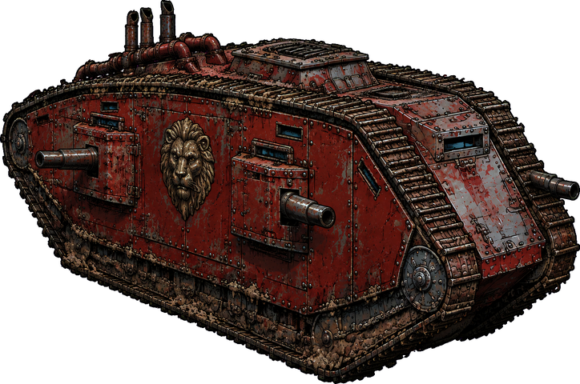
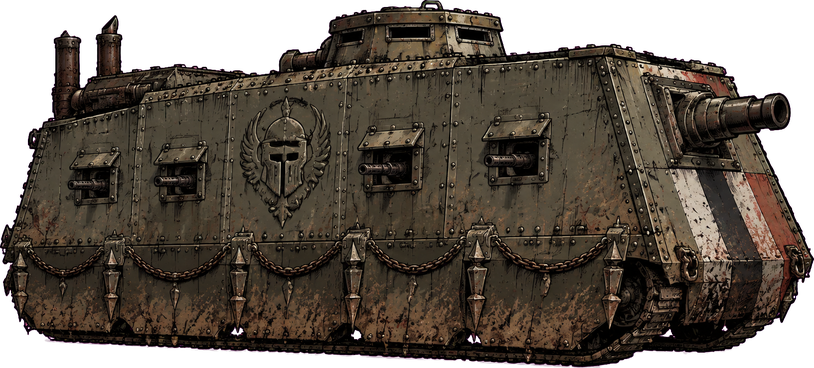

Alter Koloss (Seitenansicht)

BildNeuer Koloss (Dreiviertelansicht)
 Bildim Spiel (neuer Filter)
Bildim Spiel (neuer Filter)Sturmpanzer

BildJe Spalte links das Bild, rechts so, wie es das Spiel zeigt (mit dem Filter für Kettenfahrzeuge). Der neue Koloss (Dreiviertelansicht, 2026-11-17) ist nur leicht angeglichen: nicht abgedunkelt, Kontrast ×1,15 um die mittlere Helligkeit, eigener milder Filter, damit das Rot kräftig bleibt.

BildBildim Spiel (neuer Filter)
Bild| Messwert im Spiel (deckende Pixel, 0–1) | Alter Koloss + alter Filter | Neuer Koloss + neuer Filter | Sturmpanzer + Filter |
|---|---|---|---|
| Helligkeit (Mittel) | 0,127 | 0,183 | 0,159 |
| Glanzlichter (95 %) | 0,348 | 0,443 | 0,431 |
| Kontrast (Streuung) | 0,106 | 0,142 | 0,129 |
| Großflächige Schattierung (Volumen) | 0,047 | 0,066 | 0,076 |
| Sättigung | 0,416 | 0,435 | 0,290 |